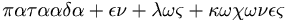

Anexo:Refranes de Patada en los cojones
 De: La Frikipedia, la enciclopedia extremadamente seria.
De: La Frikipedia, la enciclopedia extremadamente seria.

|
Este artículo necesita ser ilustrado. Busca una afoto en nuestro depósito de imágenes o donde sea y ponla, pero que no sea pr0n, que se cabrea el señor del adSense y nos corta el grifo de los dólare. Y sin dólare no hay servidor...
|
- Piedra papel patada en los cojones. Una dos y tres.
- Pares, Nones; me das una patada en los cojones.
- ¡Un palo, es una patada en los cojones!
- En el amor y en la guerra, patada en los cojones.
- Donde caben dos, patada en los cojones.
- Patada en los cojones, baby.
- Vivir juntos, morir solos de una patada en los cojones.
- ...y Dios dijo a Noé: " tomarás un macho de cada especie y le darás una patada en los cojones"
- van dos y patada en los cojones
- Super Street Fighter 4 y Resident Evil 5 Director`s Cut? !PATADON EN LOS COJONES!
- ¿No sabes qué poner? Patá en los cojones.
- Al César lo que es del César, y a Dios patada en los cojones.
- Vienbenidos a Frikipedia, ahora con un 50% menos de "patadas en los cojones".
- Carpe
Diem patada en los cojones
- La patada en los cojones es un animal temerario que se aberroncha contra el rocaje vivo.
- Guerra avisada no mata la patada en los cojones
- Como me ves, patada en los cojones.
- Soy Emoooo,Patada en los cojones.
- No soy Emoooo,patada en los cojones.
- ☃, patada en los cojones.
- Pi = 3'14 "patadas en tus cojones".
- ¡¡Oh, no!! Han matado a Kenny de una "patada en los cojones".
- ACHTUNG: Siempre que pongas algo que no es tuyo, en == Enlaces externos== procura poner la página de su creador, y al final del artículo, patada en los cojones.
- WTF?, patada en los cojones.
- dos y dos son cuatro, cuatro y dos son patada en los cojones
- No todo lo que brilla es patada en los cojones
- Según Charles Darwin las especies "patean tus cojones".
- Más vale "patada en los cojones" que cientos volando.
- Este si es un jamón de "pata en tus cojones".
- Si crias cuervos, pateà en los cojones.
- Si te falta un huevo, patada en los cojones.
- Cuando el hombre es celoso, molesta; cuando no lo es, patá en los cojones.
- Quien no buscó amigos en la alegría, patá en los cojones.
- Antes que te cases, patá en los cojones.
- Hombre refranero, patà en los cojones.
- Jesus le dijo a Pedro, Patada en los cojones.
- ¿Quieres ser feliz por un instante? !PATEA COJONES¡..¿Quieres ser feliz para siempe? ¡PATEA MAS COJONES!
- Si la montaña no va a Mahoma, Mahoma va y le patea los cojones
- Si borras los refranes de otros, patada en los cojones (¬¬)
- A quien mate dos pájaros de una patada en los cojones, patada en los cojones.
- Si es de cobardes pegar a una mujer, es de idiotas intentarle dar una patada en los cojones.
- ΦΧΨΩαδζθικλμνοπρ(Patada en los cojones)
- Dos tetas tiran mas que dos patadas en los cojones.
- El invento patea los cojones del inventor.
- A bicho que no reconozcas, patada en los cojones.
- A buen culo, patada en los cojones.
- A golpe de remo, patada en los cojones (O al revés).
- A cada cerdo le llega su patada en los cojones
- A cada uno Dios da la patada en los cojones que merece.
- Dale a tu cuerpo patada en los cojones, que tu cuerpo es para darle patada en los cojones; dale a tu cuerpo patada en los cojones...
- Capitan!!! Patada en los cojones a la vista.
- Papito pateale los cojones al perrito
- "Ven conmigo si quieres que te patee los cojones" (The Pateacojonator)
- La materia no se crea ni se destruye solo se le patean los cojones.
- si te enfrentas a un enano, mordida a los cojones
- si con scorpion te encuentras fatality a los cojones
- Caballo regalado te pateara los cojones
- senojoc sol ne adatap
- al que a huevo mata, a huevo patada en los cojones
- Si a mujer besas, patada en los cojones
- A buen hambre no hay patada en los cojones. (por Llucia xD)
- ¡ING Direct! ¡Tu otra patada en los cojones, y cada dia la de más gente!
- Al pan, pan y a pablo motos patada en los cojones.
- Al que madruga,patada en los cojones
- Martín siempre merecerá una buena patada en los cojones.
- Si ves al que a hecho esta página, patada en los cojones.
- Todo lo que sube,tiene
que bajar que darle una pataa en los cojones.
- No por mucho madrugar más patadas en los cojones.
- A conejo puto, patada en los cojones
- Es mejor un mal arreglo, que una patada en los cojones.
- A quien en los laureles se duerme, patada en los cojones.
- No dejes para mañana las patadas en los cojones que puedes dar hoy.
- A caballo regalado, patá en los cojones.
- Quien mucho quiere saber, patada en los cojones.
- Ma vale pájaro en mano que cien que te pateen los cojones
- Más sabe el diablo por viejo, que por
diablo dar patadas en los cojones.
- Al que madruga, patada en los cojones.
- Dale a Dios lo que es de Dios, y al César patada en los cojones.
- En tierra de ciegos, patadas en los cojones.
- A quien a tocar el bajo se dedica, patada en los cojones.
- A al que a buen arbol se arrima,patada en los cojones
- A quien a los pobres da de comer, patada en los cojones.
- De tal palo, tal patada en los cojones.
- Einstein: E=patada a los cojones
- Mas vale prevenir que patada en los cojones.
- El pez por la patada en los cojones muere.
- Todo cabe en un tarrito, con una patada en los cojones.
- Aunque la mona se vista de seda, patada en los cojones.
- Cuánto más alto, mas patadas en los cojones.
- Donde manda capitán, patada en los cojones
- El que se acerque a Topillo, patada en los cojones.
- Quien esté libre de pecado, que dé la primera patada en los cojones.
- Lo que no te mata, te da una patada en los cojones.
- Mierda que no mata, patada en los cojones.
- Cuando las ganas de follar aprietan, patada en los cojones.
- En manos de un cobarde, patada en los cojones.
- Camaron que se duerme, patada en los cojones
- Sábado sabadete, camisa nueva y patada en los cojones.
- Hasta el rabo todo es patada en los cojones.
- Quien ríe en viernes, patada en los cojones el lunes.
- Dale un pez a un hombre y lo habrás alimentado un día, enséñale a pescar y te dará una patada en los cojones.
- El muerto al hoyo y patada en los cojones.
- Cuando las barbas de tu vecino veas pelar, patada en los cojones.
- Quien mucho abarca, patada en los cojones.
- Cuando llueve y hace sol, patada en los cojones.
- Cría cuervos y te patearan en los cojones.
- Quien bien te quiere, patada en los cojones.
- Cuando el hombre es celoso, patada en los cojones.
- Cuando fuiste martillo no tuviste clemencia, patada en los cojones.
- Ojo por ojo y patada en los cojones.
- Ande yo caliente y patada en los cojones.
- Quien tiene un amigo, patada en los cojones.
- Quien a buen árbol se arrima, patada en los cojones.
- A enemigo que huye, patada en los cojones.
- Si quieres la paz, patada en los cojones.
- Más vale pájaro en mano que cien patadas en los cojones.
- ¿No querías caldo? Pues patada en los cojones.
- A falta de pan, patada en los cojones.
- A buen diente, patada en los cojones.
- A mal tiempo, patada en los cojones.
- En Abril, patada en los cojones.
- La patada en los cojones mató al gato
- A buen capellán, patada en los cojones.
- A casa de tu tía, patada en los cojones.
- Boca de fraile, patada en los cojones.
- Pan con pan, patada en los cojones.
- Persona que es curiosa, patada en los cojones.
- Quien al cielo escupe, patada en los cojones.
- Como no te calles, patada en los cojones.
- Desafortunado en el juego, patada en los cojones.
- Porque la gallina cruzó la calle? para darte una patada en los cojones.
- A amante que no es osado, patada en los cojones.
- A burro viejo, patada en los cojones.
- A caballero nuevo, patada en los cojones.
- A buenas horas, patada en los cojones
- A buen entendedor, patada en los cojones.
- Quién a hierro mata, patada en los cojones.
- Patada en los cojones, patada en los cojones.
- Cuando el río suena, patada en los cojones.
- Cuando no esta el gato, patada en los cojones.
- Cuando veas tu casa quemar, patada en los cojones.
- Cuando todos gritan, patada en los cojones.
- Cuando una puerta se cierra, patada en los cojones.
- El que parte y reparte se lleva la mejor patada en los cojones.
- En la casa del jabonero, patada en los cojones.
- El que roba a un ladrón, patá en los cojones.
- Ojos que no ven, patada en los cojones.
- Hagua que no has de beber, patada en los cojones.
- Para dominar el mundo, patada en los cojones.
- El que no llora, padata en los cojones.
- El que callar no puede, patada en los cojones.
- ぬぢのへちぞ, patada en los cojones
- Si a Roma vas, patada en los cojones
- O follamos todos, o patada en los cojones.
- Si lloras por no haber visto el sol, patada en los cojones.
- Perro que ladra, patada en los cojones.
- A buen hambre, patada en los cojones.
- Mas vale prevenir que patada en los cojones.
- Mal de muchos, patada en los cojones.
- A quien dios no le dio hijos, patada en los cojones.
- Al pentakismyriohexakisquilioletracosiohexacontapentagonalis, patada en los cojones.
- A palabras necias, patada en los cojones.
- Si no te gusta la sopa, patada en los cojones.
- Dime con quien andas y patada en los cojones.
- Todos los caminos conducen a patada en los cojones.
- En boca cerrada, patada en los cojones.
- A mujer desesperada, patada en los
cojones ovarios cojones.
- A veces es mejor callar que patada en los cojones.
- Árbol que nace torcido, patada en los cojones.
- A patada en los cojones, patada en los cojones.
- Dime de lo que presumes y patada en los cojones.
- El que siembra su maíz, patada en los cojones.
- El que tenga más saliva, patada en los cojones.
- Detrás de cada gran hombre, patada en los cojones.
- No por mucho madrugar, patada en los cojones.
- ΔφΧΣΤθ, ΡΔΤΔδΔ ΣΠ ΓΘΖ ςδγΦΝΣΖ, patada en los cojones.
- ¿No te ries en frikipedia? Patá en los cojones.
- Dios da pan a patadas en los cojones.
- En casa del herrero, patada en los cojones.
- El que con lobos anda, patada en los cojones.
- Con ayuda del vecino, patada en los cojones.
- El que no tiene casa, patada en los cojones.
- Unos tienen la fama y otros patada en los cojones.
- Quien mal anda, patada en los cojones.
- Más vale malo conocido que patada en los cojones.
- Al pan, pan y al vino, patada en los cojones.
- Hasta el 40 de Mayo, patada en los cojones.
- La memoria es como el mal amigo; cuando más falta te hace, patá en los cojones.
- Cada oveja con su patada en los cojones.
- Barriga llena, patada en los cojones.
- Haz el bien y patada en los cojones.
- Da patadas en los cojones sin mirar a quién.
- No te acostarás sin una patada en los cojones.
- El que a solas se ríe, patada en los cojones.
- El que ríe último, patada en los cojones.
- El que con niños se acuesta, patada en los cojones.
- Si el grajo vuela bajo, patada en los cojones
- A mal ejemplo, patada en los cojones.
- Tiran más dos tetas que patada en los cojones.
- Mas vale buena muerte que patada en los cojones.
- Quien va a Sevilla, patada en los cojones.
- Si vis pacem, patada en los cojones.
- ¿Yo?, patada en los cojones.
- Donde hay patrón, patada en los cojones.
- Quien a burros favorece, patada en los cojones merece.
- Dios los cría, y ellos se dan patada en los cojones.
- Quien calla, patada en los cojones.
- A quien le caiga el guante, patada en los cojones.
- Hoy por mí, y mañana patada en los cojones.
- El tiempo es oro, y quien lo pierde, patada en los cojones.
- A Dios rogando, y patada en los cojones.
- Comida acabada, patada en los cojones.
- El hombre que el bien no agradece, patada en los cojones.
- En la puerta del horno, patada en los cojones.
- No está el horno para patadas en los cojones.
- Manjar que no quiere el amo, patada en los cojones.
- El hombre es el único animal que da dos veces la misma patada en los cojones.
- Se non é vero, calcio nelle coglioni.
- Mens sana in calcio nelle coglioni.
- No por mucho madrugar te vas a librar de la patada en los cojones^
- En boca cerrada siguen habiendo patadas en los coger
- La Unión hace la fuerza de la patada en los cojones (Si no lo entiendes: ¿Qué duele más que te de una patada uno o que te la den veinte?)
- A buen sueño, patada en los cojones.
- A carnero castrado, ¿¡patada en los cojones!?.
- A cualquier dolencia, patada en los cojones.
- A falta de polla, patada en los cojones.
- Simplemente, patada en los cojones.
- ¡Zas, patada en los cojones!.
- Males comunicados, suelen ser remediados de una patada en los cojones.
- Marido celoso, patada en los cojones.
- A puta adulta, patada en los cojones.
- Quien tiene un amigo le da una patada en los cojones.
- A quien un wombat se arrima, buena patada en los cojones le cobija.
- A quien se rie como una puta, patada en los cojones.
- Si te he visto no me acuerdo, así que te doy una patada en los cojones.
- Van 2 y se cae el del medio por una patada en los cojones.
- El que se aburra viendo esto, patada en los cojones.
- La cebolla le dijo al ajo, patada en los cojones.
- Lentejas, si te gustan las comes, si no, patada en los cojones.
- No por mucho madrugar, patada en los cojones.
- Si hay abundancia de comida y ropa, patada en los cojones
- A rey muerto, patada en los cojones.
- Más vale patada en la mano que ciento en los cojones.
- Patada en los cojones quien lo lea. ¡Ay!
- Zapatero, a tus patadas en los cojones.
- Mené mené tequel pa...tada en los cojones.
- La accion justifica la patada en los cojones.
- Hasta que no hay colmillos, patada en los cojones.
- El orden de los factores no altera las patadas en los cojones.
- Hombre cortés, patada en los cojones.
- Zapato que aprieta, patada en los cojones.
- Mas vale solo a que ten patadas en los cojones.
- No juzgues si no quieres patada en los cojones.
- Se cree el ladrón que todos dan patadas en los cojones.
- Yo soy Juan Palomo, yo me lo guiso, yo me doy la patada en los cojones.
- No te quieres enterar, ye ye, que yo te di la patada en los cojones ye ye ye ye.
- Aserejé ja dejé, patada en los cojones y sevinoua.
- Piensa en verde y en una patada en los cojones.
- Esto es como buscar una patada en los cojones en un pajar.
- Con una patada en los cojones tardarás más y llegarás más tarde.
- Sé qué patada en los cojones diste la última semana.
- Yo solo sé que patada en los cojones.
- ¡Patada en los cojones señor Pelaez, patada en los cojones!
- España va con patadas en los cojones.
- Buenas noches y buena patada en los cojones.
- Este local se reserva el derecho de patear en los cojones.
- No es amor, es una patada en los cojones.
- Operación patada en los cojones.
- Superpatadaenloscojones.
- Gran patada en los cojones.
- A perro flaco, patada en los cojones.
- Quien Fuma?... el puma, pues patada en los cojones.
- A abad sin ciencia ni conciencia; patada en los cojones.
- A asno lerdo, patada en los cojones
- A buena mujer, patada en los cojones.
- A burra nueva, patada en los cojones.
- El que con lobos anda, patada en los cojones.
- A quien Windows usa, patada en los cojones.
- La persona más feliz del mundo dio una patada en los cojones.
- Bush declara la guerra con patada en los cojones.
- Y dios dijo, patada en los cojones.
- El año de la patada en los cojones.
- Descargar patada en los cojones gratis.
- A enamorado siempre patada en los cojones.
- Si tu viejo es zapatero, patada en los cojones.
- La escuela es una patada en los cojones.
- A bebe recién nacido, patada en los cojones.
- Patada en los cojones sin piedad.
- Al ignorante patada en los cojones.
- La creatividad nace de una patada en los cojones.
- A viejo sin dientes patada en los cojones.
- Eres la luz que ilumina la patada en los cojones.
- Cuando caes al fondo del pozo solo queda patada en los cojones.
- Patada en los cojones es irrelevante.
- La perfección es una patada en los cojones.
- Mi mamá me regalo una patada en los cojones.
- Patadita en los cojones.
- Confia en cristo y el te dara una patada en los cojones.
- La sabiduría muchas veces consiste en dar patadas en los cojones.
- Las inteligencias grandes discuten las ideas; las inteligencias medias dan patadas en los cojones.
- Los hombres sabios aprenden con los errores que otros cometen, los tontos con las patadas en los cojones.
- Muchas veces castiga Dios con lo que da, y premia con patada en los cojones.
- Los sueños y la perseverancia son una poderosa patada en los cojones.
- Todos los triunfos nacen cuando nos atrevemos a ... patada en los cojones.
- No hay perfección sin esfuerzo. Los mediocres jamás cosechan rosas por temor a la patada en los cojones.
- Lo que es bello es bueno, y lo que es bueno, patada en los cojones.
- Hemos llegado a la edad madura, cuando teniendo para escoger entre dos tentaciones, elegimos la que nos permite dar patadas en los cojones.
- Un buen vallado hace buenas patadas en los cojones.
- Todo lo que sube, patada en los cojones.
- A falta de pan, patadas en los cojones.
- Éramos pocos y patada en los cojones.
- Dios aprieta, pero da patadas en los cojones.
- Download limit exceeded, patada en los cojones
- en tiempos de crisis patada en los cojones
- Si te tiras un pedo, patada en los cojones.
- Y si no dos patadas en los cojones
- A gana de comer, patada en los cojones
- Ave que vuela, patada en los cojones
- Al perro de Damaris patada en los cojones.
- La patada en los cojones no hace al monje.
- Desvestir un santo para dar patadas en los cojones a otro.
- El muerto al hoyo, y al vivo patá en los cojones.
- Le dijo la sartén al cazo: te viá dar una patá en los wevos (entiendase cojones)
- Los niños vienen con una patada en los cojones debajo del brazo.
- Dios da patadas a quien no tiene cojones.
- A nuevo amanecer, patada en los cojones
- Vine, vi y patada en los cojones
- Si la vida te da la espalda, dale una patada en los cojones
- El que es perico, patada en los cojones
- Amor de lejos, patada en los cojones
- Es más facil dar una patada en los cojones que pedirla
- Jeremías lloraba sus penas y no sus patadas en los cojones
- Zorra dormilona, patada en los cojones
- Zorrilla que mucho tarda, patada en los cojones
- Zorro dormilón, no da patada en los cojones
- Zorros en zorrera la patada en los cojones los echa afuera.
- Zumba con el desigual en casa, y zumbará contigo en la patada en los cojones.
- Zumbido de mosquito, patada en los cojones
- Zumo de limón, patada en los cojones.
- Zumo de parras, patada en los cojones
- Zurciendo y remendando, vamos dando patada en los cojones
- Zurcir bien, es más que patada en los cojones
- Zurcir y remendar y mejores tiempos esperar; y si no vinieren, patada en los cojones
- Zurdos y cojos, denme patada en los cojones
- Zurra y más zurra, hasta que la vara se quiebre o caiga la patada en los cojones
- ¿Zurría la panza? Pide patada en los cojones
- Zurrón de mendigo, patada en los cojones
- A Buen Eric, patada en los cojones
- A río revuelto patada en los cojones
- Dime con quien andas y te daré una patada en los cojones
- Blanco y en vasija, patada en los cojones
- A dios rogando y patadas en los cojones dando
- Cuando los cojones de tu vecino veas patear, pon los tuyos a remojar
- A buen entendedor pocas patadas en los cojones bastan
- Lo que mal empieza con patada en los cojones acaba
- Españoles............ patada en los cojones
- ぐけげこごさざしじすずせぜそぞただちぢっつづてでとどなにぬねのはばぱひびぴふぶぷへべぺほぼぽまみむめもゃやゅゆょよらりるれろゎわゐゑをんゔ , patada en los cojones
-  patada en los cojones
- Cuanto más alto subas, más dura será la patada en los cojones.
- La materia ni se crea ni se destruye debido a la patada en los cojones.
- Quien escriba un refrán mas, patada en los cojones.
- E=mc al cuadrado=super patada en los cojones(segun Einstein)
- El pescar con caña, requiere de paciencia y patada en los cojones
- Al que repita los refranes, patá en los cojones.
- ¿Ser o no ser? esa es la patá en los cojones.
- *, patada en los cojones
- THIS IS....... PATADA EN LOS CONJONES!!!
- siVesCamelCase, patadaEnLosCojones.
- Elvis Presley cantó el 13 de Julio de 1956, Don´t Be Cruel, después de recibir una patada en los cojones.
- Si no sabes configurar el emule, patada en los cojones.
- Sexo, drogas y patadas en los cojones.
- Snatch: Cerdos y patadas en los cojones (2000).
- Sexo, mentiras y patada en los cojones (1989).
- La religion es la patada en los cojones del pueblo.
- A nadie le amarga una patada en los cojones.
- Pateo, luego existo.
- Patea mal y acertaras.
- OO DIOS MIO NO SIENTO LA PATADA EN LOS COJONES!
- Prevision meteorologica: Caerán buzos de punta y patada en los cojones.
- En el gimnasio me han dicho que empieze haciendo press de patada en los cojones.
- Principio de Arquimedes: Toda patada en los cojones, sumergida en un fluido experimenta un empuje brutal y hacia arriba igual al peso la patada en los cojones desalojado.
- Todos los que tengan la terminación del DNI con numero impar, tendran una patada en los cojones.
- Y por estas fechas, feliz Navidad y prospera patada en los cojones.
- Los que tengan el DNI par, tambien tendran su patada en los cojones.
- Casablanca: Esto puede ser el principio de una buena patada en los cojones.
- Patada en los cojones profunda XXX.
- Si eres de los que tienen Macintosh patada en los cojones.
- Si tienes nokia patada en los cojones.
- Si tienes coche, patada en los cojones.
- Si eres tio, patada en los cojones.
- Y si tienes windows, motorola, moto o eres tia , patada en los cojones.
- YES WE CAN (patada en los cojones)
- A los examenes patada en los cojones
- A la wikipedia patada en los cojones
- Veni, vidi y patada en los cojones
- Mas rapido cae un mentiroso que uno que da patada en los cojoes.
- Entre primo y primo, patada en los cojones.
- Donde caben dos, caben tres patadas en los cojones.
- La lengua es el castigo de la patada en los cojones.
- No hay patá en los cojones que cien años dure.
- NOKIA kicking in the nuts people.
- La curiosidad patio al gato en lo cojones.
- 3 monjes y un abad, no podrán proteger al asno de la patada en los cojones que le van a dar.
- Va un caracol y te da una patada en los cojones.
- Loreal, porque yo me doy patadas en los cojones.
- Quien a Ciberjesús ofende, patada extensible en los cojones.
- Vienbenidos a la Frikipedia! Ahora con un 50% menos de patadas en los cojones.
- Quien prefiera Linux a Hasefroch, patada en los cojones.
- El ignorante afirma, el inteligente reflexiona, y el sabio da patadas en los cojones.
- Dios da pañuelos a quien no tiene una buena patada en los cojones.
- We're living a patada en los cojones, todos juntos, vamos a patear.
- 2 son compañia, 3 son una patada en los cojones.
- Your account has been banned, así que patada en los cojones.
- Siembra viento, y recogeras patadas en los cojones.
- Vamos por partes, y luego a por patadas en los cojones. (Jack el destripador)
- Su sistema operativo ha detectado el troyano patada en los cojones, se recomienda el reinicio.
- Pañuelos 5€, billetes de avion 250€, patada en los cojones... no tiene precio.
- La hipotenusa es igual a la suma de las patadas de los cojones al cubo. (Según Arquímedes)
- Cuando veas a Genarox, a Sharlak, o a alguien de valencia (todos menos Riglock), patada en los cojones.
- Oh dios mio! Han matado a keny a base de patada en los cojones!
- Allí donde fueres, patada en los cojones.
- Más vale morir de pie que patada en los cojones.
- En la Rusia soviética, patada en los cojones.
- Nunca discutas contra una patada en los cojones.
- La avaricia da patadas en los cojones.
- Para dominar el mundo, patada en los cojones. (Buen consejo).
- SPQR: Senatus Patadum en Quojonis Romanus.
- La vida da muchas patadas en los cojones.
- OJO, MUY IMPORTANTE: Antes de editar un artículo, patada en los cojones.
- Para más información, patada en los cojones.
- A caballo regalado, patada en los cojones.
- <Insertar medio refrán aquí>, patada en los cojones.
- Si puedes leer esto, patada en los cojones.
- Camarón que se duerme, patada en los cojones.
- Aquí se rompió una taza y patada en los cojones.
- Ni tanto que queme al santo, ni patada en los cojones (o mejor si).
- Cuando mires al cielo, patada en los cojones.
- Al que juega con fuego.... Patada en los cojones xD
- Cuando cuentes cuentos, patada en los cojones (XD)
- A patada en los cojones, patada en los cojones.
- Hay cosas que el dinero no puede comprar. Para todo lo demás, patada en los cojones. (Yo diría que todo).
- Si haz leido todo esto, patada en los cojones
- Quien diga un refrán más, patada en los cojones.
- Si eres bueno con la gente, patada en los cojones.
- A esta persona le han dado una patada en los cojones. Eh, no, que esto no cuenta como refrán. ¡No, baja el pie! ¡¡NO!! ¡¡¡AAAAAAAAAAAAAAAAAAAAAAAAAAAAAAAAAAAAAUUUUUUUUUUUUUUUUUUUUUUUU!!!
- Si rompes un espejo, 7 años de patadas en los cojones.
- A cochi con mal de ojo, patada en los cojones.
- Arbol ke nace torcido, patada en los cojones.
- Si digo que la burra es parda, es por la patada en los cojones.
- Ante la duda, patada en los cojones.
- Aquí o follamos todos o patada en los cojones.
- Tengo una patada en los cojones negros.
- Y cien patadas dónde irán (a los cojones)
- La vida es como una patada en los cojones: nunca sabes cuánto te va a doler.^
- Hay cosas que el dinero no puede comprar, para todo lo demas existen patadas en los cojones
- Las patadas en los cojones no se dan en los arboles............
- Houston, tenemos una patada en los cojones.
- I was made for kick you the balls!!!!!.....
- Amo el olor a patada en los cojones por la mañana
- Chewbacca habla de esa manera ya que solo puede seguirse quejando de una patada en los cojones de El Innombrable
- En el portal de belen han entrado unos ratones, y al pobre de san jose.... patada en los cojones
- Quien se lie con la puta T......patada en los cojones
- 1 de Enero, 2 de Febrero, 3 de Marzo, 4 de Abril; 5 de Mayo, 6 de Junio, 7 de Julio patada en los cojones.
- Los loros me odian y me dan patadas en los cojones.
- Opá, yo viacé un corrá, pa echá gallinas, y patás en los cojones. OPAAAAAAA.
- La vida es como una patada en los cojones. Nunca sabes de quién ni cuándo la recibirás.
- El que repita los refranes, patada en los cojones.
- En la Rusia soviética los cojones te patean a ti.
- Las gallinas que entran por las patadas en los cojones.
- Cuando un tonto coje una linde patá en los cojones
- AAAAAAAA AAAAAAAAA AAAAAAAA AAAAAAAAAAA AAAAAAAA, patada en los cojones.
- Si has entendido lo de arriba, patada en los cojones.
- Contigo pan y patada en los cojones.
- Tórtola!!!! patada en los cojones.
- Si viene un vampiro a chuparte la sangre, patada en los cojones.
- La religión es la patada en los cojones del pueblo. (gracias Marx)
- Hoy por ti, mañana patada en los cojones.
- Ésto es tela, no, ésto es lana, 5 euros, PUM! (patada en los cojones)
- No hay mal que por patada en los cojones no venga.
- Con esto y un bizcocho, patada en los cojones.
- Mano que teta no cubre no es teta, sino patada en los cojones.
- Mucho ruido y pocas patadas en los cojones.
- Soldado que huye, sirve para dar otra patada en los cojones.
- Say hello to my little patada en los cojones.
- Consiste en lanzar patadas en los cojones.
- A misil soviético, patada en los cojones.
- Si me buscas, patada en los cojones.
- Quien me busca, patada en los cojones.
- Si buscas una mano que te ayude, la encontrarás al final de tu patada en los cojones.
- Dime con quien andas y te dare una patada en los cojones.
- Quien con fuego juega, patada en los cojones.
- ``Cuando pienses en volver, aqui estan tus amigos, tu lugar y tu mujer, y te abrazaran, diran que el tiempo no paso, y te patearan los cojones con amor´´.
- Quien este libre de pecado, que de la primera patada en los cojones.
- Quien mucho abarca, patada en los cojones.
- A palabras necias, patada en los cojones.
- Al que repita refrán, patada en los cojones.
- Al que cielo escupa, patada en los cojones (y escupitajo seguro sino te quitas de ahí).
- Quien tiene tienda, patada en los cojones.
- Al que mata dos pájaros de un tino, patada en los cojones.
- El que las hace, patada en los cojones.
- A lo hecho, patada en los cojones.
- Al que con lobos anda, patada en los cojones.
- Más vale pájaro en mano que patada en los cojones.
- Al que da cucharada de la misma medicina, patada en los cojones.
- Si en Bud confías, no habrá patada en los cojones.
- Si en Bud desconfías, patada giratoria en los cojones
- Más vale decir: ``Aquí corrió que aquí le dieron patada en los cojones´´.
- Al que miente, patada en los cojones.
- ボールのキック
- Al que entendió lo de arriba, patada en los cojones.
- El que roba a un ladron,mil patadas en los cojones.
- El que estorba, patada en los cojones.
- yeah,perdonen,patada en los cojones
- año nuevo patada en los cojones nueva
- hasta el dia de navidad,patada en los cojones sin cesar
- a cada puerco le llega su patada en los cojones
- a buen entendedor,patada en los cojones
- galan atrevido,favorito de las patadas en los cojones
- en boca cerrada,patada en los cojones
- a buenas horas, patada en los cojones
- Si eres emo, patada en los cojones.
- Si no eres emo, pero te caen bien, patada en lo cojones.
- El que avisa no da patadas en los cojones.
- Si es que me dan una patada en los cojones y no me sacan sangre!
- Abril trae las flores y Mayo se lleva la patada en los cojones.
- Abril sonriente, de patada en los cojones mata a la gente.
- Si Mahoma no va a la montaña, patada en los cojones.
- Haz el amor y no des patadas en los cojones.
- Una patada en los cojones es la ¿mejor? amiga del hombre.
- Los gordos son malas personas, como Jackie Gleason. Era gordo, y daba patadas en los cojones.
- Si el friki supremo qe ha escrito esto ( a quien estoy diciendo ya sabra,) pata en los cojoones. ( aprovecho para decirles un tipo de friki de lo mas nuevo gente qe no tiene vida social y se dedica a joder a los demas, muchas gracias por escucharme. a todos ellos, patada en los cojones)
- La realidad siempre supera a la patada en los cojones.
- Nunca pege a un hombre en el suelo, si se levanta te puede dar una...patá en los cojones!
- Si lees todo este articulo, patada en los cojones.
- Al friki, patada en los
mojones cojones
- A enemigo que huye, patada en los cojones
- Al que baile la canción del telediario, patada en los cojones.
- Pase lo que pase, patada en los cojones.
- HOYGAN PATA HEN LOS KOGONES
- Mas vale patada en los cojones tarde que patada en los cojones nunca.
- A quien dios ayuda, patá en los cojones.
- Mas vale pájaro en mano que patá en los cojones.
- ¡Oh suerte injusta! Al rico se le muere la mujer y al pobre patá en los cojones.
- ...De todas maneras recibiras una patada en los cojones. Firmado: Patada en los cojones
- Si los reggaetoneros perrean los perros les daran una patada en los cojones
Como ampliar esta sección: Busca en Gúguel algún refranero, y cuando lo tengas, ve copiando los refranes, pero después de la coma, sustituye en texto por "patada en los cojones".
- Oveja que berrea, patada en los cojones.
- A falta de pan, buenas son patadas en los cojones.
- Más vale ir solo, que con patadas en los cojones.
- Eran dos, y se calló una patada en los cojones.
- Polvo eres y en polvo de una patada en los cojones te convertirás.
- Esta es la patada en los cojones que colmó el vaso.
- Recuerda el cuento de la lechera, mucho planear y se jodió por una patada en los ¿cojones?.
- Si bebes, no des patadas en los cojones.
- Precaución amigo conductor, que la senda es peligrosaaa, PATADA EN LOS COJONES!
- Si no llegas a un preci de 6 pies, PATÀ EN LOS COJONES!(referente a parkour)
- Si no sabes que es parkour PATÀ EN LOS COJONES!
- Si es el primer artículo de frikipedia que lees... pues PATÁ EN LOS COJONES!!!
- Be patada en los cojones, my friend
- Acuéstate con chicos, y te patearan los cojones
- Si eres Emo, patada en los cojones
- Si eres Floguer, patada en los cojones
- Si alguna vez intentaste hacer un kamekameha, patada en los cojones
- Si fuiste al cine a ver Dragon Ball Evolution y eres Fan de Dragon Ball kamekameha en los cojones
- Si rindes y estas hueviando en frikipedia, patada en los cojones
- Pantalla Azul y patada en los cojones
- Pikachu, y patada en los cojones
- Camaron que se duerme, patada en los cojones
- En casa del jabonero, el que no cae, recibe una patada en los cojones
- Dime con quien andas y te pateare los cojones.
- Si eres Emo, patada en los cojones
- Si ves al SR.Camilo 2 patadas en los cojones 1 por ke es gay y 2 por el refran.
- Si no posteas, patada en los cojones
- Si no hace la voluntad de Bud Spencer, patada giratoria en los cojones
- Si el uri te lo dice PATÁ EN LOS COJONES a chucha madre macedonio
- Los que se pelean se dan patadas en los cojones.
- Si te lo dice el Osuna le das patadas en los cojones a el primero que pase
- Si eres gay te daran muchas patadas en los cojones
- El SR.Camilo no te da patadas en los cojones te da bocao en los cojones.
- Patria Socialismo ó patada en los cojones. (no soy Chavista -.-)
- Quien a buen árbol se arrima, patada en los cojones
- Marzo ventoso y abril lluvioso sacan a mayo de una patada en los cojones
- No hay mal que por una patada en los cojones no venga
- La paciencia es una virtud,una patada en los cojones es no tener paciencia
- El mejor gerrero es el que no da patadas en los cojones
- Un dia un viejo monje shaolin me dijo: (Patada en los cojones)
- Y como suelen decir en Francia"Un coup de pied dans les cojones"
- El hombre es el unico animal que se da dos patadas en los cojones con la misma piedra
- Zas!patada en los cojones
- Le entra por un oido y le sale de una patada en los cojones
- Ojo por ojo y diente por patada en los cojones
- A cada cerdo le llega su patada en los cojones
- A la tercera va la patada en los cojones
- Antes se coje a un mentiroso...a base de patadas en los cojones
- Mas vale pajaro en mano que mil patadas en los cojones
- Al que madruga, patá en los cojones.
- agradeceria al que firma con mi nombre o utiliza mi nombre qu no lo volviera a hacer, porqe sino llamo a 4 amigos y, patada en los cojones (lo digo en serio, no utilicen mi nombre porfavor)
- 1. EL RODILLIN, 2. LA GIRATORIA, 3. LA DE SORPRESA, 4. EL PATADÓN. METE PATÁ EN LOS COJONES, METE PATÁ EN LOS COJONES...
- Teorema de pitagoras: en un triangulo rectangulo se cumple qe el cuadrado de la patada en los cojones es igual a la suma de los cuadrados de los cojones
- Van dos tomates por la carretera y le dice uno al otro: Mira un chof!! ¿Qué? Patada en los cojones
- Cuando vas por la calle i ves al SR.Camilo llama a los pitufos i dale patadas en los cojones.
- Si alimentas un Gremlin después de media noche, éste te dará patada en los cojones
- Si has aprobado todas las asignaturas con excelente, se te otorgará una patada en los cojones de honor
- Una foto vale mas que mil patadas en los cojones
- Patada en los cojones or die trying
- En un lugar de mis cojones cuya patada no quiero acordarme...
- El que dijo que la pluma es mas fuerte que la espada no conocio la patada en los cojones.
- AL que escucha al porta,patada en los cojones
- Todo aquel que a patadas en los cojones mata, a patadas en los cojones muere.
- Muerto el perro, se acabaron las patadas en los cojones.
- Fue peor el remedio que la patada en los cojones
- Ver la paja en el ojo ajeno (XD) y no la patada en los propios cojones
- Copia y pega esto en otros 5 articulos si no quieres que te de una patada en los cojones
- Al que no da patadas en los cojones, patada en los cojones.
- A cualquier emo, patada en los cojones
- Si te falta amor y dinero, patada en los cojones.
- Cuando seas padre, patada en los cojones.
- Cuando hay hambre, patada en los cojones.
- Es peor el remedio que la patada en los cojones.
- Ojos que no ven, patada en los cojones.
- Entre bueyes no hay cornadas, hay patadas en los cojones.
- Donde comen 2, 3 dan patadas en los cojones.
- De tal palo, tal patada en los cojones.
- Si te he visto, patada en los cojones.
- Quien teme a la muerte, patada en los cojones.
- Hay una fuerza motriz mas poderosa que el vapor, la electricidad y la energia atómica, la patada en los cojones.
- Quien dice dos patadas en los cojones, dice tres patadas en los cojones.
- Al que madruga Diox le da una patada en los cojones
- Cuando el pobre se va de culo, no hay patada en los cojones que lo tranque.
- Ojos que no ven, patada en los cojones.
- El que madruga, patada en los cojones
- Si la vida te da la espalda, patada en los cojones
- Por la boca muere el pez, y por patada en los cojones usted!!
- Unos nacen con estrella y otros con patada en los cojones
- Mas vale poco que patada en los cojones
- Dios castiga sin palo, pero si con patada en los cojones
- En casa de herrero, patada en los cojones
- ZzzzzzzzZzzzzzz......patada en los cojones
- "No dire nada,mis cojones estan sellados"
- Que de la primera patada en los cojones el que este libre de pecado
- Al final del camino, patada en los cojones
- A mula que otro amanse, patada en los cojones darle
- Gato Escaldo, patada en los cojones va dando
- ¿¿Sientes calor?? Pues patada en los Cojones
- Si del cielo te caen limones, patada en los cojones
- A IP anónima patada en los Cojones
- Hutani Patada en los cojones
- Patada en los cojones No Jutsu
- THIS IS PATADAAAAA!
- THIS IS SPARTAAAAAAAADA EN LOS COJONES.
- Jugador de chica, patada en los cojones
- Patada en los cojones ist krieg!!!
- Patada en los cojones ist fucking krieg!!!
- Un gran poder conlleva una gran patada en los cojones. (Spiderman 1)
- Una gran patada en los cojones conlleva una gran responsabilidad (Spiderman 2)
- Si no queda satisfecho, patada en los cojones.
- Blanco es, la gallina lo pone, en la sartén se fríe y patada en los cojones.
- Se abre el telón y patada en los cojones.
- "Padre ¿por que me has pateado en los cojones?" Ultima frase de cristo en la cruz.
- Quien se pica, patada en los cojones.
- A palabras necias, patada en los cojones.
- Más vale tarde que patada en los cojones.
- Las cosas claras, y patada en los cojones.
- Si Mahoma no va a la montaña, patada en los cojones.
- Donde dije digo, patada en los cojones.
- Patada en los cojones y te diré quien eres.
- Tiran más dos tetas que dos patadas en los cojones.
- A enemigo que huye, patada en los cojones.
- Quien a buen árbol se arrima, patada en los cojones.
- A quien madruga, patada en los cojones.
- A buen entendedor, patada en los cojones.
- Oveja que bala, patada en los cojones.
- A todo cerdo le llega su patada en los cojones.
- Cada maestrillo tiene su patada en los cojones.
- Cuando veas las barbas del vecino remojar, patada en los cojones.
- El que no llora, patada en los cojones.
- Gallo que no canta, patada en los cojones.
- Cuando el río suena, patada en los cojones.
- Quien va deprisa, patada en los cojones.
- A burro muerto, patada en los cojones.
- Si bebes, patada en los cojones.
- A perro ladrador, patada en los cojones.
- Patada en los cojones y te diré quien eres.
- Si llueve y hace sol, patada en los cojones.
- Si el viento viene de sierra, patada en los cojones.
- A río revuelto, patada en los cojones.
- Blanco y en botella, patada en los cojones.
- Cuando el grajo vuela bajo, patada en los cojones.
- Las cosas claras y patada en los cojones.
- Ajo, agua y patada en los cojones.
- En boca cerrada, patada en los cojones.
- Al mal tiempo, patada en los cojones.
- Quien come y canta, patada en los cojones.
- Al judío y al gitano, patada en los cojones.
- Dice el refranero, patada en los cojones.
- Yo en mi casa y patada en los cojones.
- Cuando vuela la urraca, patada en los cojones.
- Quien esté libre de pecado, patada en los cojones.
- Aunque la mona se vista de seda, patada en los cojones.
- Zapatero, patada en los cojones.
- Pienso, luego patada en los cojones.
- Aquí el que no corre, patada en los cojones.
- Mal de muchos, patada en los cojones.
- A caballo regalado, patada en los cojones.
- Cuando seas padre, patada en los cojones.
- Después de la tempestad, patada en los cojones.
- Más vale pájaro en mano que patada en los cojones.
- En casa de herrero, patada en los cojones.
- Ave que no vuela, patada en los cojones.
- Quien ríe el último, patada en los cojones.
- Si no puedes con ellos, patada en los cojones.
- Teta que mano no cubre, patada en los cojones.
- Mas vale solo que patada en los cojones.
- Al que a buen arbol se arrima, patada en los cojones.
- La patada en los cojones mató al gato.
- La letra con patada en los cojones entra.
- La vida es una barca - Calderón de la patada en los cojones.
- Si juegas con fuego, patada en los cojones.
Ver También
Autor(es):
- Urem
- Daviday 85
- Butters2
- Alexo32
- Genericool
- Tennedor
- Por que es gilipollas
- Sportcenters06
- Shadowmura
- Larvitar
Frikipedia 2005-2016, Licencia
GFDL 1.2 - Extraído por FrikiLeaks